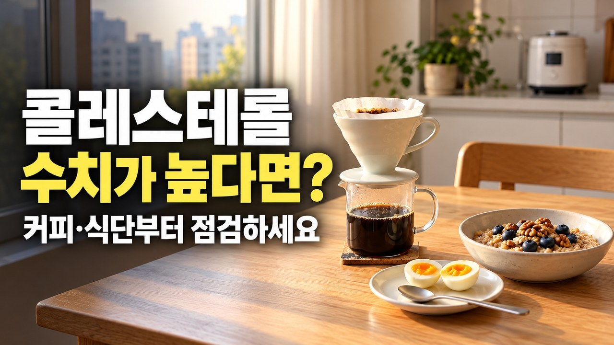
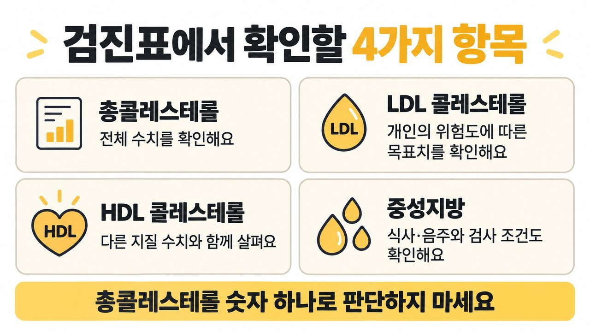
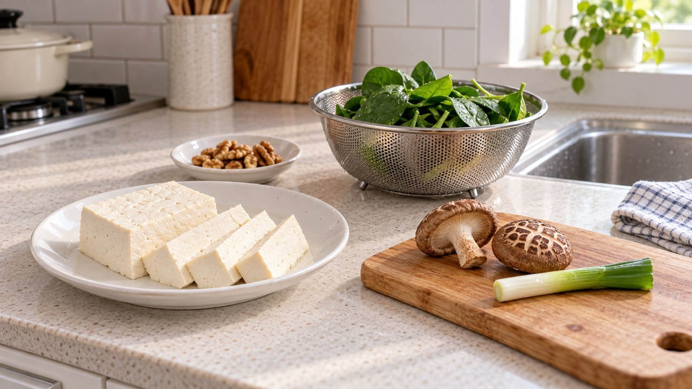
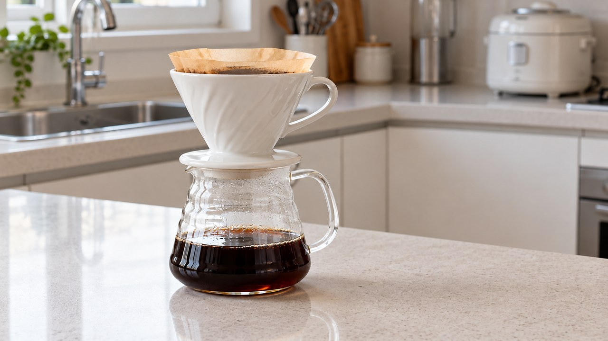
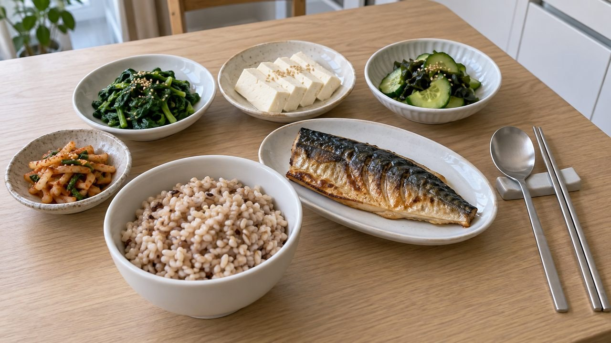

LDL 콜레스테롤 수치 높은 이유, 총콜레스테롤 200 넘을 때 커피·식단 조절법

건강검진 우편물을 뜯어 보았을 때
총콜레스테롤 옆에 200 mg/dL이 넘는 숫자가 적혀 있으면
가슴이 철렁 내려앉기 마련이지요.
평소 기름진 고기 요리를 자주 먹는 편도 아닌데
왜 나쁜 LDL 콜레스테롤이 130 mg/dL이나 160 mg/dL을 넘었는지
억울한 마음이 드셨던 적 있으시죠?
사실 우리 몸의 지질은 식사량보다 간에서 스스로 만드는 양이 훨씬 많아서
계란만 끊어서는 수치가 쉽게 내려가지 않습니다!

| 소식해도 수치가 오르는 뜻밖의 이유

우선 피를 뽑기 전날 밤부터 9~12시간 빈속을 잘 유지했는지,
검진실 의자에서 5분 동안 차분히 숨을 고른 뒤 측정했는지 떠올려 보세요.
바쁘게 걸어와 숨이 찬 채로 주사기를 꽂으면 피가 일시적으로 진해져
수치가 높게 찍힐 수 있으니 날을 달리해 2회 이상 확인하는 편이 안전합니다.

적게 먹는데도 LDL 지표가 130~159 mg/dL 경계선을 넘어서는 까닭은
간식 속 숨은 기름기와 호르몬·체질 변화가 간에서 지질 생성을 부추기기 때문입니다.

특히 여성분들은 완경기를 지나며 에스트로겐 방어막이 옅어져서
식단이 그대로여도 나쁜 지질은 치솟고 든든한 HDL(여성 50 mg/dL, 남성 40 mg/dL 기준)은 줄어듭니다.
| 계란보다 포화지방과 커피 필터 점검

식재료 자체에 들어 있는 콜레스테롤은 수치가 이미 높은 분만
하루 300mg 안쪽으로 줄이면 되니 아침 삶은 달걀 한 알을 겁내실 필요는 없습니다.
정작 먼저 덜어내야 할 대상은 삼겹살·버터·팜유 같은 포화지방(열량의 7% 미만)과
0.2g 미만일 때 0으로 적히는 마가린·도넛 속 트랜스지방입니다.

게다가 고압으로 뽑는 에스프레소 아메리카노나 스테인리스(금속) 거름망으로 내린 드립커피에는
간세포가 피 속 지질을 회수하는 통로를 막는 디테르펜 기름 성분이 그대로 남아 하루 4잔 넘게 마시면 수치를 끌어올립니다.
그러니 설탕 없는 블랙이라도 촘촘한 종이 필터나 종이 드립백으로 기름기를 걸러낸 드립커피로 골라
하루 3~4잔 아래로만 가볍게 즐기시는 습관이 훨씬 유리합니다.

| 식이섬유 25g 식단과 전문가 상의 기준

장 속에서 남는 기름기를 흡착해 밖으로 내보내려면 수용성 섬유질이 풍부한 귀리·보리·콩·해조류로
전체 식이섬유를 매일 25g 이상 넉넉하게 채워 주는 밥상이 든든한 버팀목이 됩니다.
우유는 지방 1% 이하 저지방 제품으로 바꾸고, 과체중·비만인 경우 하루 500 kcal씩 덜어내어
몸무게를 5~10%만 줄여도 혈액 검사표가 한결 가벼워집니다.

조금 숨이 차는 빠른 걸음을 주 5회, 한 번에 30분 이상 이어 가고
주 2회 근력 운동을 보태어 허리둘레(남성 90 cm, 여성 85 cm 아래)를 지켜 보세요.
다만 집안 내력으로 수용체 기능이 약하거나 LDL 지표가 190 mg/dL을 넘길 때,
또는 혈당·혈압 고민이 함께 있거나 걸을 때 종아리 통증·가슴 압박감이 느껴진다면
혼자 식단만 고집하지 마시고 빠르게 전문의를 찾아 맞춤 관리를 상의하셔야 합니다.

내일 아침 향긋한 커피를 내리실 때는 하얀 종이 필터를 먼저 챙겨 보시고
저녁 식탁에는 쫀득한 귀리·보리 잡곡밥과 미역 반찬을 올려보시면 어떨까요?
여러분은 혈관 관리를 위해 커피 추출 습관부터 먼저 바꾸실 건가요,
아니면 빵·과자 같은 간식 속 기름기부터 줄여 보실 건가요? 댓글로 편하게 들려주세요 😊

#콜레스테롤수치 #LDL콜레스테롤 #총콜레스테롤수치 #콜레스테롤낮추는음식 #콜레스테롤낮추는방법 #콜레스테롤높은이유 #HDL콜레스테롤 #LDL콜레스테롤정상수치 #건강검진콜레스테롤 #콜레스테롤커피 #콜레스테롤계란 #이상지질혈증식단 #에디터혀니 #꿀단지